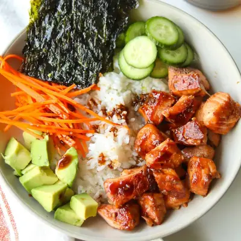

Teriyaki Salmon Bowl

Ingredients
- 1.5 pound salmon fillet, skin removed, cut into bite-sized cubes
- 1/2 cup Homemade Teriyaki Sauce
- 1-2 teaspoons olive oil (or avocado oil)
- 2 cups cooked rice
- 1 cup thinly sliced cucumber
- 1 cup shredded carrots
- 1 medium avocado, peeled and sliced or diced
- 1 cup shelled edamame
- 1 package seaweed snacks
Steps
- Place salmon in a bowl. Pour in prepared teriyaki sauce (reserving about 3 tablespoons for drizzling later). Marinate for 20–30 minutes in the fridge.
- Heat oil in a skillet over medium heat. Add salmon (shaking off extra marinade) and cook for 2–3 minutes per side, until golden and cooked through. If you’d like, pour in a little of the reserved marinade during the last minute for extra glaze.
- Assemble the bowls. Start with a scoop of warm rice. Top with salmon, then add your favorite toppings—cucumber, carrots, avocado, seaweed snacks, sesame seeds, green onions, or whatever your family enjoys. Drizzle with extra teriyaki sauce before serving.
Recipe by Min Kwon · Kidfriendly Meals, from MJ and Hungryman. Saved here for personal use; the original has the full notes, tips and photos. Open original